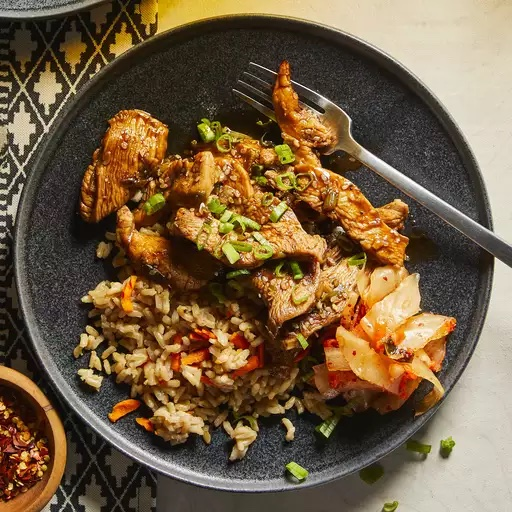

Bulgogi

Description
The Bulgogi is a South Korean dish that is popular. It is a savory beef that is delectable. Here in Los Angeles you can find great
restaurants with long lines of people.
Though I've provided the ingredients and steps below to cook it yourself.
Ingredients
- 1/4 cup of chopped onion
- 5 tablespoons of soy sauce
- 2 and half tablespoons of brown sugar
- 2 tablespoons of sesame oil
- 2 tablespoons of minced garlic
- 1 pound of ribeye
Steps
- Whisk onion, soy sauce, brown sugar, garlic, and sesame oil together in bowl.
- Cook and stir the ribeye and marinade together in a large skillet over medium heat for about 15 minutes.